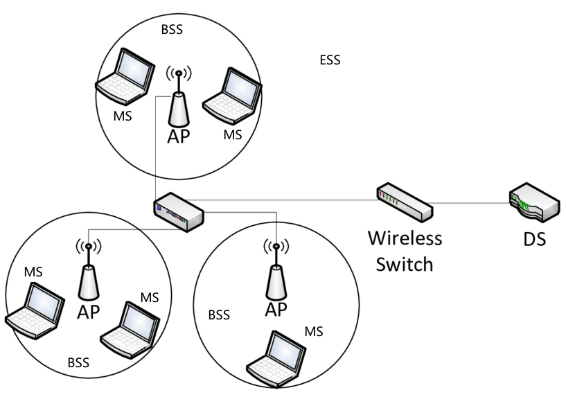
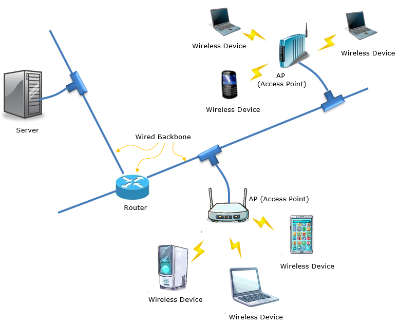

SSID = “Mall_Free_WiFi”
相同的加密方式（如 WPA2-Enterprise）

争用信道（Channel Contention）
推迟接入（Defer Access）
退避机制（Backoff）
WLAN is a computer network that uses wireless technology via radio waves to connect computer devices in a limited area, such as in a building, campus, or certain public areas.
Utilizing radio waves, WLANs allow access without physical cables, facilitating mobility and flexibility in communicating and accessing the internet and shared resources.